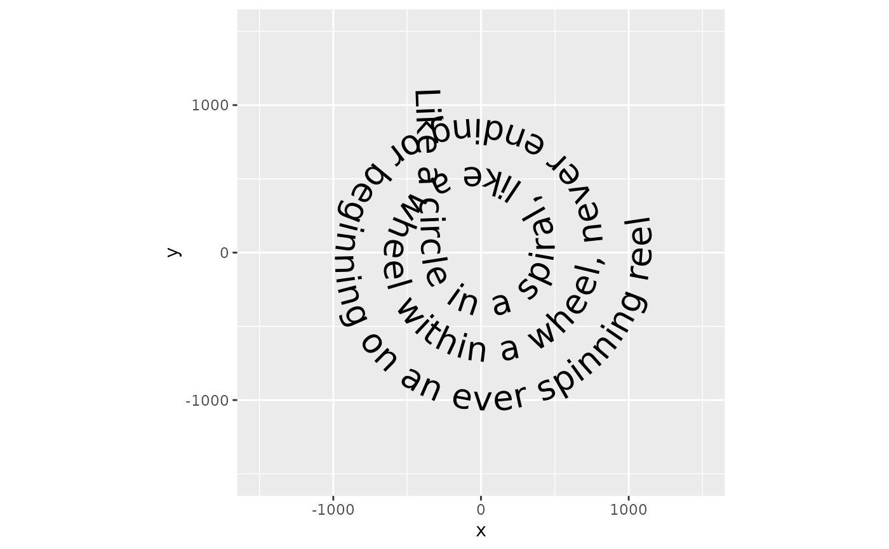

Add Curved Text Along Paths in ggplot2
Source:R/geom_textpath.R, R/geom_labelpath.R
geom_textpath.RdThe existing text-based geom layers in ggplot2
(geom_text() and
geom_label()) are ideal for the majority of plots,
since typically textual annotations are short, straight and in line with the
axes of the plot. However, there are some occasions when it is useful to have
text follow a curved path. This may be to create or recreate a specific
visual effect, or it may be to label a circular / polar plot in a more
"natural" way.
Usage
geom_textpath(
mapping = NULL,
data = NULL,
stat = "identity",
position = "identity",
na.rm = FALSE,
show.legend = NA,
inherit.aes = TRUE,
...,
lineend = "butt",
linejoin = "round",
linemitre = 10,
text_only = FALSE,
gap = NA,
upright = TRUE,
halign = "center",
offset = NULL,
parse = FALSE,
straight = FALSE,
padding = unit(0.05, "inch"),
text_smoothing = 0,
rich = FALSE,
arrow = NULL,
remove_long = FALSE
)
geom_textline(
mapping = NULL,
data = NULL,
stat = "identity",
position = "identity",
na.rm = FALSE,
orientation = NA,
show.legend = NA,
inherit.aes = TRUE,
...,
lineend = "butt",
linejoin = "round",
linemitre = 10,
arrow = NULL
)
geom_labelpath(
mapping = NULL,
data = NULL,
stat = "identity",
position = "identity",
na.rm = FALSE,
show.legend = NA,
inherit.aes = TRUE,
...,
lineend = "butt",
linejoin = "round",
linemitre = 10,
text_only = FALSE,
gap = FALSE,
upright = TRUE,
halign = "center",
offset = NULL,
parse = FALSE,
straight = FALSE,
padding = unit(0.05, "inch"),
text_smoothing = 0,
rich = FALSE,
label.padding = unit(0.25, "lines"),
label.r = unit(0.15, "lines"),
arrow = NULL,
remove_long = FALSE
)
geom_labelline(
mapping = NULL,
data = NULL,
stat = "identity",
position = "identity",
na.rm = FALSE,
show.legend = NA,
inherit.aes = TRUE,
...,
lineend = "butt",
linejoin = "round",
linemitre = 10,
text_only = FALSE,
gap = FALSE,
upright = TRUE,
halign = "center",
offset = NULL,
parse = FALSE,
straight = FALSE,
padding = unit(0.05, "inch"),
label.padding = unit(0.25, "lines"),
label.r = unit(0.15, "lines"),
arrow = NULL,
remove_long = TRUE
)Arguments
- mapping
Set of aesthetic mappings created by
aes()oraes_(). If specified andinherit.aes = TRUE(the default), it is combined with the default mapping at the top level of the plot. You must supplymappingif there is no plot mapping.- data
The data to be displayed in this layer. There are three options:
If
NULL, the default, the data is inherited from the plot data as specified in the call toggplot().A
data.frame, or other object, will override the plot data. All objects will be fortified to produce a data frame. Seefortify()for which variables will be created.A
functionwill be called with a single argument, the plot data. The return value must be adata.frame, and will be used as the layer data. Afunctioncan be created from aformula(e.g.~ head(.x, 10)).- stat
The statistical transformation to use on the data for this layer, as a string.
- position
Position adjustment, either as a string, or the result of a call to a position adjustment function.
- na.rm
If
FALSE, the default, missing values are removed with a warning. IfTRUE, missing values are silently removed.- show.legend
logical. Should this layer be included in the legends?
NA, the default, includes if any aesthetics are mapped.FALSEnever includes, andTRUEalways includes. It can also be a named logical vector to finely select the aesthetics to display.- inherit.aes
If
FALSE, overrides the default aesthetics, rather than combining with them. This is most useful for helper functions that define both data and aesthetics and shouldn't inherit behaviour from the default plot specification, e.g.borders().- ...
Other arguments passed on to
layer(). These are often aesthetics, used to set an aesthetic to a fixed value, likecolour = "red"orsize = 3. They may also be parameters to the paired geom/stat.- lineend
Line end style (round, butt, square).
- linejoin
Line join style (round, mitre, bevel).
- linemitre
Line mitre limit (number greater than 1).
- text_only
A
logical(1)indicating whether the path part should be plotted along with the text (FALSE, the default). IfTRUE, any parameters or aesthetics relating to the drawing of the path will be ignored.- gap
A
logical(1)which ifTRUE, breaks the path into two sections with a gap on either side of the label. IfFALSE, the path is plotted as a whole. Alternatively, ifNA, the path will be broken if the string has avjustbetween 0 and 1, and not otherwise. The default for the label variant isFALSEand for the text variant isNA.- upright
A
logical(1)which ifTRUE(default), inverts any text where the majority of letters would upside down along the path, to improve legibility. IfFALSE, the path decides the orientation of text.- halign
A
character(1)describing how multi-line text should be justified. Can either be"center"(default),"left"or"right".- offset
A
unitobject of length 1 to determine the offset of the text from the path. If this isNULL(default), thevjustparameter decides the offset. If notNULL, theoffsetargument overrules thevjustsetting.- parse
A
logical(1)which ifTRUE, will coerce the labels into expressions, allowing for plotmath syntax to be used.- straight
A
logical(1)which ifTRUE, keeps the letters of a label on a straight baseline and ifFALSE(default), lets individual letters follow the curve. This might be helpful for noisy paths.- padding
A
unitobject of length 1 to determine the padding between the text and the path when thegapparameter trims the path.- text_smoothing
a
numeric(1)value between 0 and 100 that smooths the text without affecting the line portion of the geom. The default value of0means no smoothing is applied.- rich
A
logical(1)whether to interpret the text as html/markdown formatted rich text. Default:FALSE. See also the rich text section of the details ingeom_textpath().- arrow
Arrow specification, as created by
grid::arrow().- remove_long
if TRUE, labels that are longer than their associated path will be removed.
- orientation
The orientation of the layer. The default (NA) automatically determines the orientation from the aesthetic mapping. In the rare event that this fails it can be given explicitly by setting orientation to either "x" or "y". See the Orientation section for more detail.
- label.padding
Amount of padding around label. Defaults to 0.25 lines.
- label.r
Radius of rounded corners. Defaults to 0.15 lines.
Details
Limitations
There are limitations inherent in the plotting of text elements in ggplot2 due to the way that the underlying grid graphics handles text. A text string is dealt with as a zero-width object, and therefore the rotation and spacing of the letters making up the string can only be dealt with by treating each letter separately.
It is important to realise that the letters are only rotated, and do not undergo any change in shape. Thus, for example, large text appearing on convex curves will not be deformed so that individual letters are narrower at the bottom and wider at the top. Doing so would require reinterpreting the letters as polygons.
Another issue is that we may wish to use a short curved label on a much
longer path. Spacing the letters equally along the path would mean there is
too much space between the letters for the label to remain legible. A single
text string is therefore kept "together" according to the point size of the
text in geom_textpath(). This then leaves the problem of where on the
path the text should be placed. This can be dealt with by the aesthetic
mapping hjust, which allows the user to place the labels
at the desired position along the path, including separate positions for
each label.
A final point to note is that a path is usually a group-based geom (i.e.
a path typically comprises x, y points from two columns over several rows of
a data frame), whereas text labels can come from single rows in a data frame.
This means that if we have a data frame with an x column, a y column and a
grouping variable column, there can only be a single label for the group.
Typically, this will be the grouping variable itself (see the examples,
particularly those using the built-in iris data set.)
Rich text
The rich text option (rich = TRUE) relies heavily on rich-text parsers
copied from the {gridtext} package. We thank Claus O. Wilke for
developing {gridtext} and allowing us to re-use his code under the
MIT licence. Currently, the supported HTML tags are <p>, <span>, <b>,
<strong>, <i>, <em>, <sub>, <sup> and <br>.
Aesthetics
geom_textpath() understands the following aesthetics (required aesthetics are in bold):
xylabelalphaanglecolourfamilyfontfacegrouphjustlinecolourlineheightlinetypelinewidthsizespacingtextcolourvjust
In addition to aforementioned aesthetics, geom_labelpath() also understands:
boxcolourboxlinetypeboxlinewidthfill
The spacing aesthetic allows fine control of spacing
of text, which is called 'tracking' in typography.
The default is 0 and units are measured in 1/1000 em.
Numbers greater than zero increase the spacing,
whereas negative numbers decrease the spacing.
Learn more about setting these aesthetics
in vignette("ggplot2-specs").
See also
Other geom layers that place text on paths.
Examples
# Plot text along an arbitrary path
t <- seq(-1, 5, length.out = 1000) * pi
spiral <- data.frame(
x = rev(sin(t) * 1000:1),
y = rev(cos(t) * 1000:1),
s = seq(1, 10, length.out = 100),
text = paste(
"Like a circle in a spiral, like a wheel within a wheel,",
"never ending or beginning on an ever spinning reel"
)
)
ggplot(spiral, aes(x, y, label = text)) +
geom_textpath(size = 7, vjust = 2, linewidth = 0) +
coord_equal(xlim = c(-1500, 1500), ylim = c(-1500, 1500))

# Use geom_textline as a drop-in for geom_line
df <- data.frame(x = rep(1:100, 3),
y = sin(c(seq(0, pi, len = 100),
seq(pi, 2*pi, len = 100),
rep(0, 100))),
label = rep(c("y is increasing",
"y is falling",
"y is flat"), each = 100))
ggplot(df, aes(x, y, label = label, color = label)) +
geom_textline(size = 6) + theme(legend.position = "none")
 # Rich text labels can contain a subset of HTML tags
label <- paste0(
"Indometacin (",
"C<sub>19</sub>H<sub>16</sub>",
"<span style='color:limegreen'>Cl</span>",
"<span style='color:blue'>N</span>",
"<span style='color:red'>O</span><sub>4</sub>",
") concentration"
)
# These are interpreted when `rich = TRUE`
ggplot(Indometh, aes(time, conc)) +
geom_point() +
geom_labelpath(
label = label,
stat = "smooth", formula = y ~ x, method = "loess",
vjust = -3, size = 8, rich = TRUE
) +
scale_x_log10()
# Rich text labels can contain a subset of HTML tags
label <- paste0(
"Indometacin (",
"C<sub>19</sub>H<sub>16</sub>",
"<span style='color:limegreen'>Cl</span>",
"<span style='color:blue'>N</span>",
"<span style='color:red'>O</span><sub>4</sub>",
") concentration"
)
# These are interpreted when `rich = TRUE`
ggplot(Indometh, aes(time, conc)) +
geom_point() +
geom_labelpath(
label = label,
stat = "smooth", formula = y ~ x, method = "loess",
vjust = -3, size = 8, rich = TRUE
) +
scale_x_log10()